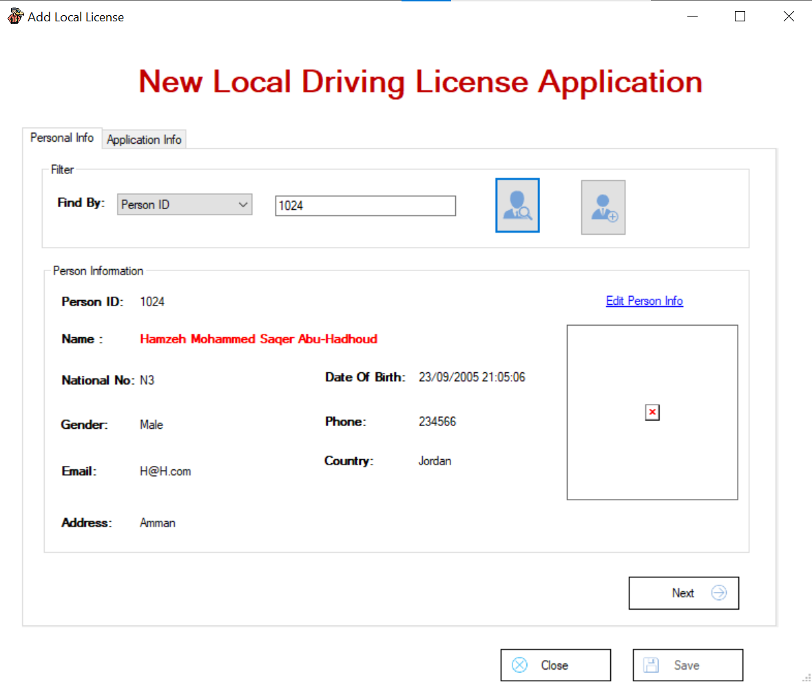

Pour créer une nouvelle demande de permis de conduire local, il faut aller dans Application
,
puis dans Driving License Services
, puis New Driving License
,
et enfin dans Local License
.

Lorsque je clique sur Licence locale, un formulaire de demande de nouvelle licence locale apparaît.

Si vous saisissez un Person ID qui ne se connecte pas au système, il ne peut pas lui délivrer une nouvelle demande de permis de conduire local. Le système affichera un message d'erreur indiquant que l'identifiant de personne est introuvable, et le bouton Next sera inactif.

Si vous saisissez Person ID déjà connectée au système, vous pouvez lui fournir une nouvelle demande de permis de conduire local. Cliquez ensuite sur Next pour accéder au résumé des opérations, disponible dans l'onglet Application info .

Si vous ne possédez pas de permis de conduire pour une catégorie particulière, nous pouvons vous aider à effectuer une demande de Local driver's license application

Si vous possédez un permis de conduire d'une certaine catégorie, nous ne pouvons pas enregistrer Local Driving license App, vous devez choisir une autre catégorie.